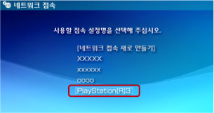

네트워크 > 리모트 플레이하기(PS3™의 무선랜 경유)
리모트 플레이하기(PS3™의 무선랜 경유)
PSP™의 무선랜 기능을 사용하여 PSP™를 PS3™에 연결합니다. 이 접속 방법은 무선랜 기능이 있는 PS3™에서만 사용할 수 있습니다.

준비하기
처음 리모트 플레이를 사용할 때는 PSP™를 PS3™에 등록(페어링)해야 합니다.  (설정) >
(설정) >  (리모트 플레이 설정) > [기기 등록]에서 설정해 주십시오.
(리모트 플레이 설정) > [기기 등록]에서 설정해 주십시오.
리모트 플레이하기
1. |
PS3™의 |
|---|---|
2. |
PSP™의 |
3. |
[가정 내에서 접속하기]를 선택합니다. |
4. |
접속 대상 목록에서 [PlayStation(R)3]를 선택합니다.  접속에 성공하면 PS3™의 화면이 PSP™에 표시됩니다. |
 (네트워크)에서
(네트워크)에서  (리모트 플레이)를 선택합니다.
(리모트 플레이)를 선택합니다. (리모트 플레이)를 선택합니다.
(리모트 플레이)를 선택합니다.알아두기
- 리모트 플레이는 PS3™가 전파를 수신할 수 있는 범위 내에서 사용할 수 있습니다.
- PS3™의 리모트 기동을 활성화하면 리모트 플레이를 할 때 대기중인 PS3™의 전원을 자동으로 켤 수 있습니다.(Wake On LAN) 이 경우에는 1 단계 설정을 해야 합니다. 상세한 사항은 (설정) > (리모트 플레이 설정) > [리모트 기동]을 참조해 주십시오.
리모트 플레이 종료하기
PSP™의 PS 버튼(HOME 버튼)을 눌러 [리모트 플레이 종료]에서 [PS3™의 전원을 끄고 종료하기]를 선택합니다.
알아두기
파일 복사나 백그라운드 다운로드 등 PS3™에서 작업을 하고 있어, PS3™의 전원을 끄고 싶지 않을 때는 [PS3™의 전원을 끄지 않고 종료하기]를 선택합니다.